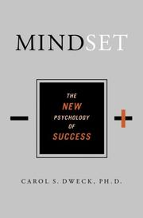

Mindset: The New Psychology of Success
Book·Carol Dweck, 2006·终身成长

A popular account of the growth mindset. Its effects were substantially reduced in later research.
- Author
- Carol Dweck
- Year
- 2006
- Difficulty
- Beginner
- Kind
- Practice
- Schools
- Positive Psychology
- Core theories
- Growth Mindset
Editions
- Chinese edition 《终身成长》 [美] 卡罗尔·德韦克 · tr. 楚祎楠 · 江西人民出版社 · 2017 Douban 7.5 (13520 ratings) Douban page ↗
- English edition Mindset: The New Psychology of Success Carol S. Dweck · Random House, updated edition · 2016 Open Library ↗